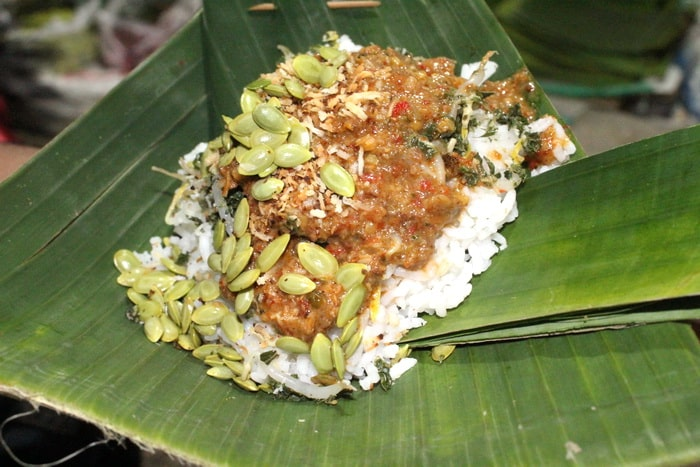

Nasi Pager Khas Godong

A. Ingredients
The ingredients of the menu can be split into 4 groups; the vegetables, the seasoning, the sauce, and the sprinkle.
- Urap Sayuran (Vegetable Salad with Seasoned Grated Coconut):
- Boiled papaya leaves
- Boiled cassava leaves
- Boiled turi flowers
- Young mlanding leaves (Leucaena leaves)
- Mlanding seeds (Leucaena seeds)
- Bean sprouts
- Basil leaves
- Winged beans, thinly sliced
- Long beans, cut into 4 cm pieces
- Seasoning Paste for Urap Sayuran:
- 3 cloves garlic
- 4 shallots
- 1 tsp coriander seeds
- 2 kaffir lime leaves
- 1 tsp salt
- 1/4 of a young coconut, grated
- Sambal Kacang (Peanut Sauce):
- Basic peanut sauce ingredients
- Uyah Goreng / Serundeng Asin (Toasted Salt):
- Savory toasted grated coconut (a.k.a. Uyah Goreng or Serundeng Asin)
B. Instructions
- Prepare all the vegetables.
- Steam the vegetables, then remove and set aside in a bowl.
- Meanwhile, grind the seasoning ingredients for the urap (vegetable salad). Steam the mixture briefly to prevent it from spoiling quickly.
- Mix all the steamed vegetables with the seasoned coconut until evenly coated.
- Prepare the peanut sauce (sambal kacang). Add hot water and stir until the sauce thickens.
- To serve Nasi Pager: Take a serving plate, add a portion of rice, top with the seasoned vegetables (urap), drizzle with the peanut sauce or pecel sauce, and finally sprinkle with uyah goreng (savory toasted coconut).
- Nasi Pager, a specialty from Godong-Indonesia, is ready to be served. It tastes even better when served with rempeyek (crispy peanut crackers) and bakwan sayur (vegetable fritters).
Source of the recipe
Home